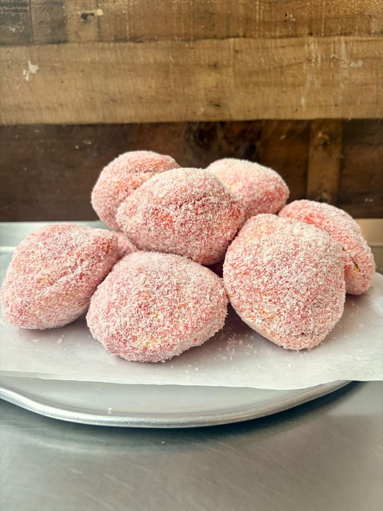
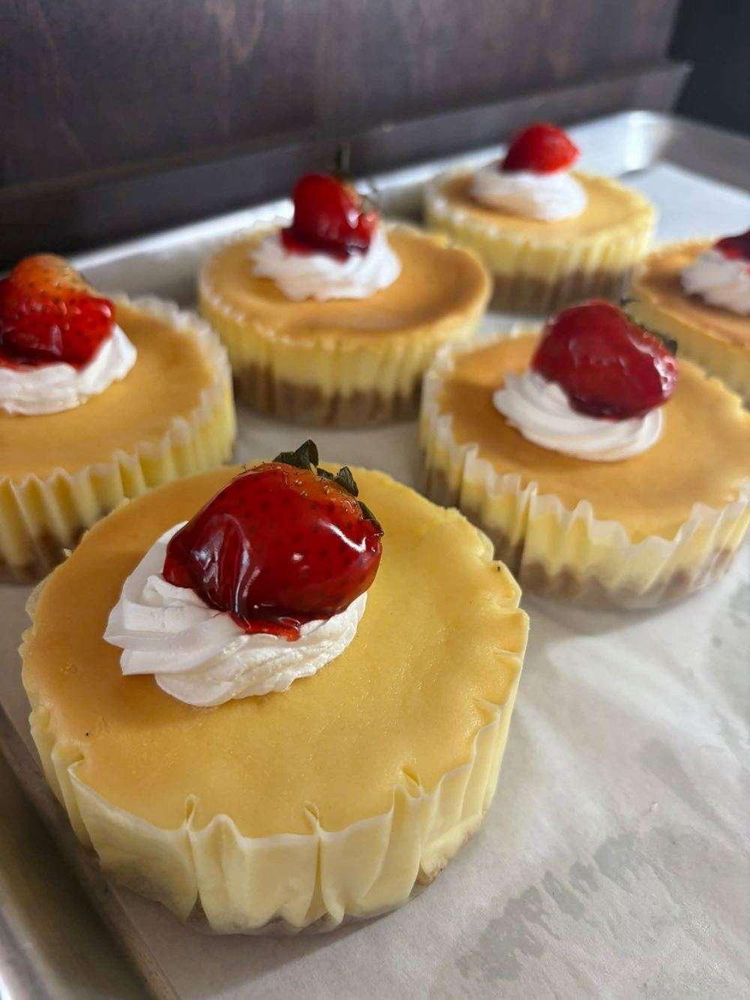
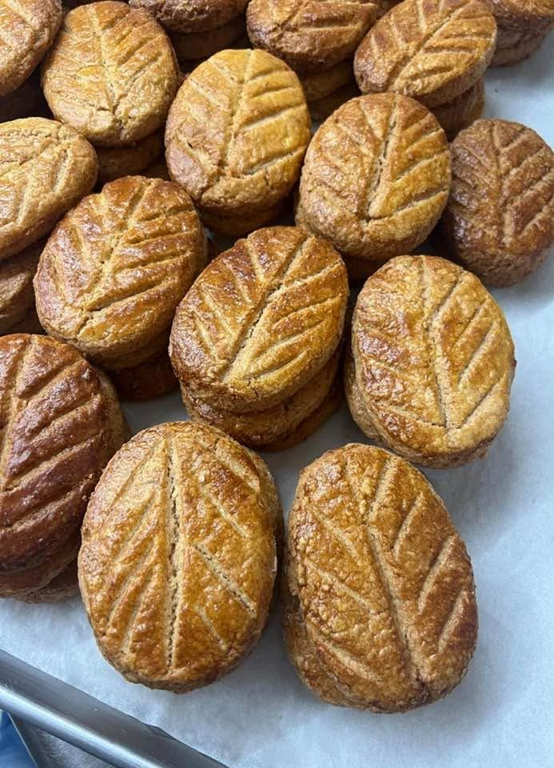
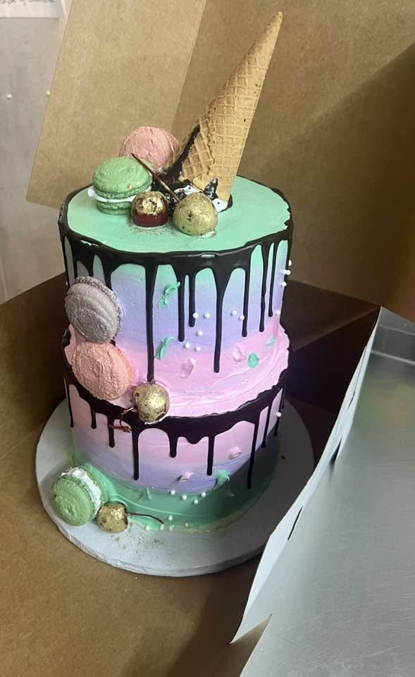
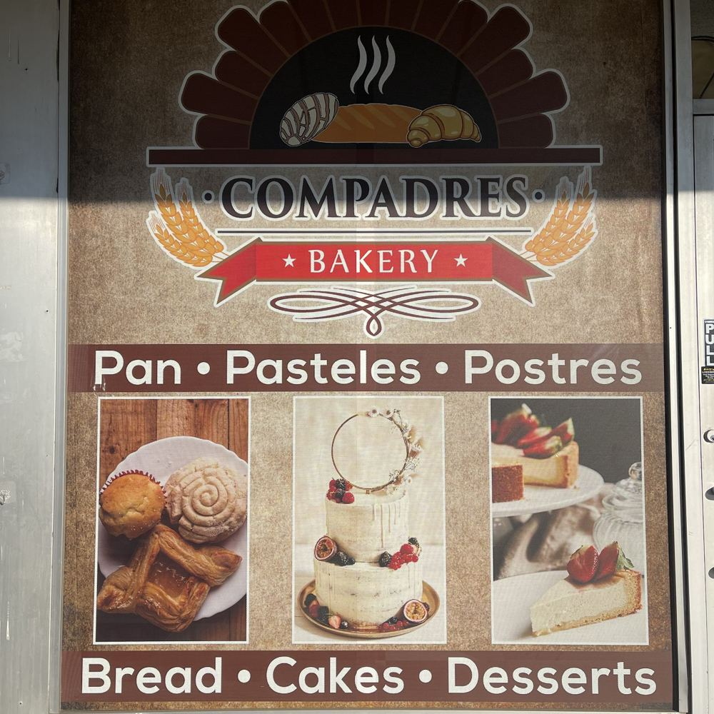

Conchas, cinnamon rolls, cheesecakes and custom cakes, baked fresh on Green Oaks Drive.
Call (817) 420-6800Hours & location
Conchas, empanadas, cinnamon rolls and more.
Tres leches and custom-themed cakes.
Cheesecakes and sweet treats.



52 reviews on Restaurantji
“We ordered a personalized cake, and they went above and beyond. I had said to just make it look nice, and they added a lot of accents I wouldn't have even thought of… Also, the prices are great, super affordable.”Restaurantji review
“Even the two persons who said they didn't like tres leches cakes… tried a bite, then they ate the whole slice without leaving a crumb!”Restaurantji review

Reviewers rave about the personalized, themed cakes. Call or email the bakery to talk through size, flavor and theme.
Mon–Fri 6 AM–8 PM
Sat 6:30 AM–8 PM
Sun 7 AM–6 PM
per public listing; confirm current hours